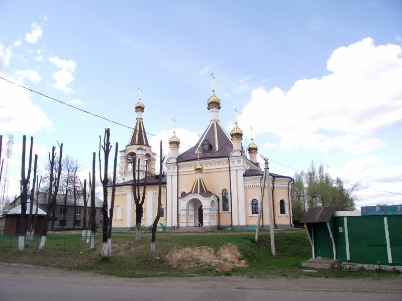
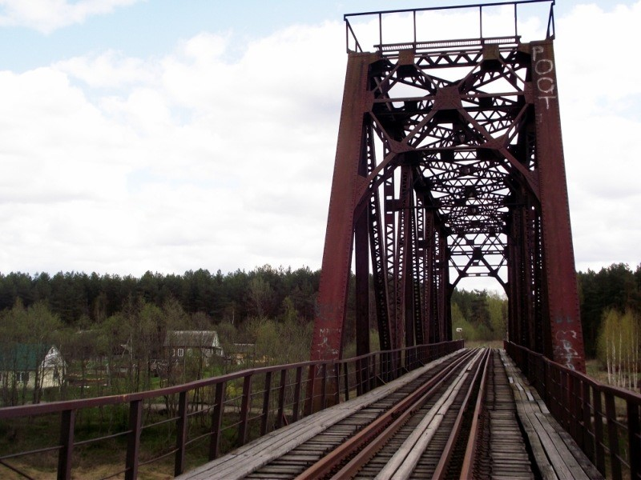

Жарковский
Культура
Церковь Владимирской иконы Божией Матери, построенная в 2012 году:

Памятник, посвящённый рейду кавалерии Льва Доватора

Рейд кавалерии Льва Доватора в августе-сентябре 1941 года, который был начат именно с территории оккупированного немцами Жарковского района.
Мост, построенный в 1935 году

Мост был построен в 1935 году в рамках продления линии от Жарковского до станции Ломоносово, во время войны он был разрушен, а затем восстановлен в 1942 году после освобождения Жарковского советскими войсками. Сейчас не эксплуатируется.